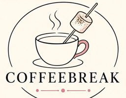

Servo & Pub Orders
by Coffeebreak, Newcastle NSW
Cart
0
Order
My orders
Venue
Driver
About
☕ Buy Karen a coffee
Send a coffee tip by PayID:
darkokaz@gmx.com
(Teachers Mutual Bank). Put the app name in the reference.
← Coffeebreak hub